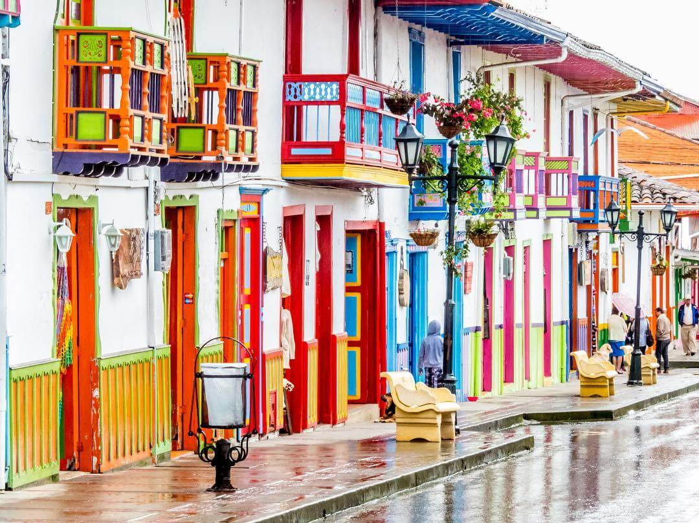
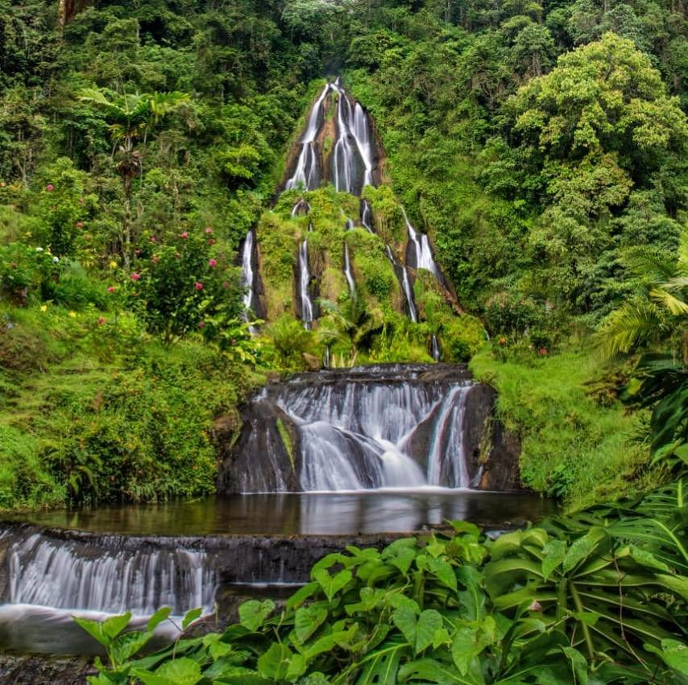
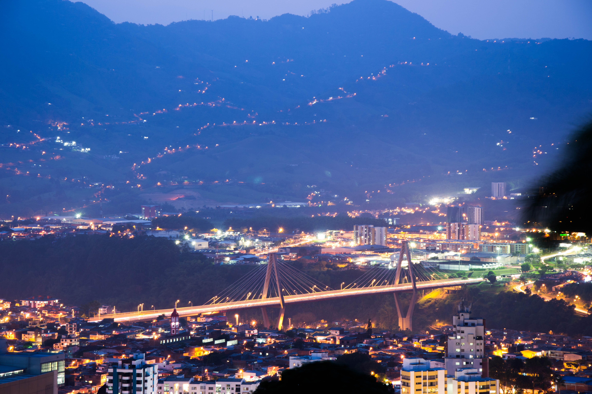

CulturaSalento
Zona tradicional donde se cultiva café y se conservan prácticas cafeteras desde hace generaciones.
Exploración interactiva
Explora el mapa y haz clic en cada lugar para conocer qué relación tiene con la cultura del café en el Eje Cafetero
Video: El Xokas (YouTube)

CulturaZona tradicional donde se cultiva café y se conservan prácticas cafeteras desde hace generaciones.
 Naturaleza
Naturaleza
Entorno natural que permite entender las condiciones donde crece el café en el Eje Cafetero.

TradiciónMunicipio donde la cultura cafetera se refleja en la vida diaria, la gastronomía y las costumbres.

CiudadCiudad que impulsó el comercio, transporte y crecimiento económico del café en la región.